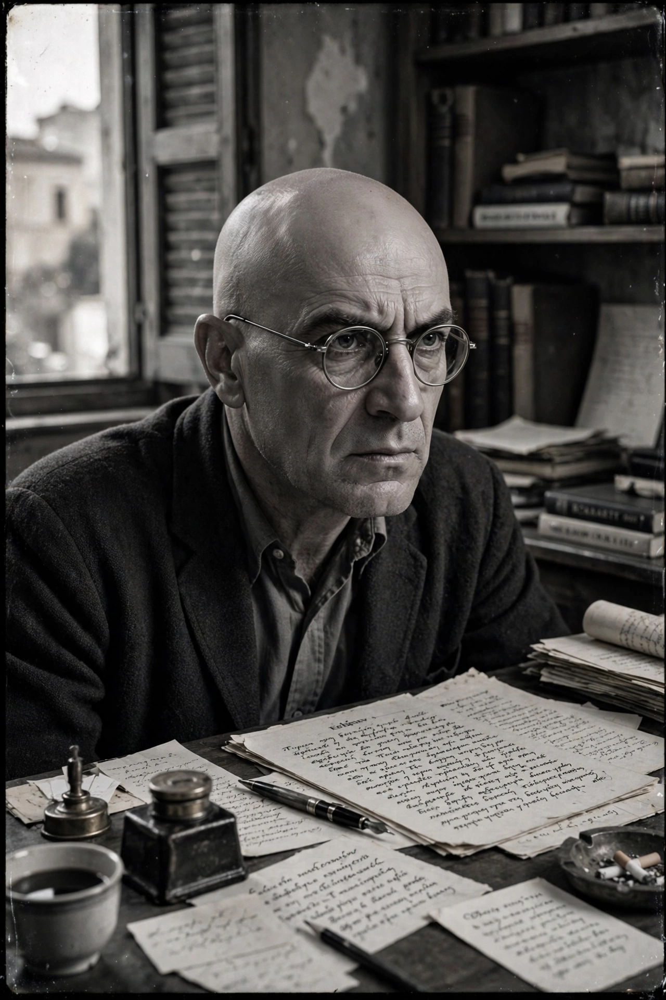

| Born | 18 February 1883, Heraklion, Crete, Ottoman Empire |
|---|---|
| Died | 26 October 1957 (aged 74), Freiburg, West Germany |
| Occupation | Novelist, poet, philosopher, translator, playwright |
| Language | Greek (Demotic) |
| Notable works | Zorba the Greek (1946); The Last Temptation of Christ (1955); The Odyssey: A Modern Sequel (1938) |
| Education | University of Athens (law); University of Paris |
Nikos Kazantzakis (18 February 1883 – 26 October 1957) was a Greek writer, journalist, politician, poet and philosopher. Widely considered a giant of modern Greek literature, he was nominated for the Nobel Prize in Literature in nine different years during the 1950s, losing in 1957 to Albert Camus by a single vote, according to Camus himself.

Kazantzakis, Greece's most translated modern author.
Born in Heraklion, Crete, when the island was still under Ottoman rule, Kazantzakis studied law in Athens and philosophy in Paris under Henri Bergson. He travelled widely — to Mount Athos, the Soviet Union, Spain, China and Japan — served briefly as a Greek government minister in 1945, and worked for UNESCO in Paris. His religious and political independence drew attacks from both the Greek Orthodox Church and communist critics.
His best-known novels are Zorba the Greek (1946), filmed in 1964 as Zorba the Greek with Anthony Quinn, and The Last Temptation of Christ (1955), which the Roman Catholic Church placed on the Index of Forbidden Books and which Martin Scorsese filmed in 1988. He considered his masterpiece to be the 33,333-line epic poem The Odyssey: A Modern Sequel. He also produced celebrated Greek translations of Dante, Goethe's Faust, and Homer. Like the Alexandrian poet Cavafy, he wrote in the demotic language against the official purist register.
Kazantzakis died of leukaemia in Freiburg in 1957. Buried on the walls of Heraklion after the Church refused him burial in a cemetery, his tomb bears the epitaph he chose: "I hope for nothing. I fear nothing. I am free."